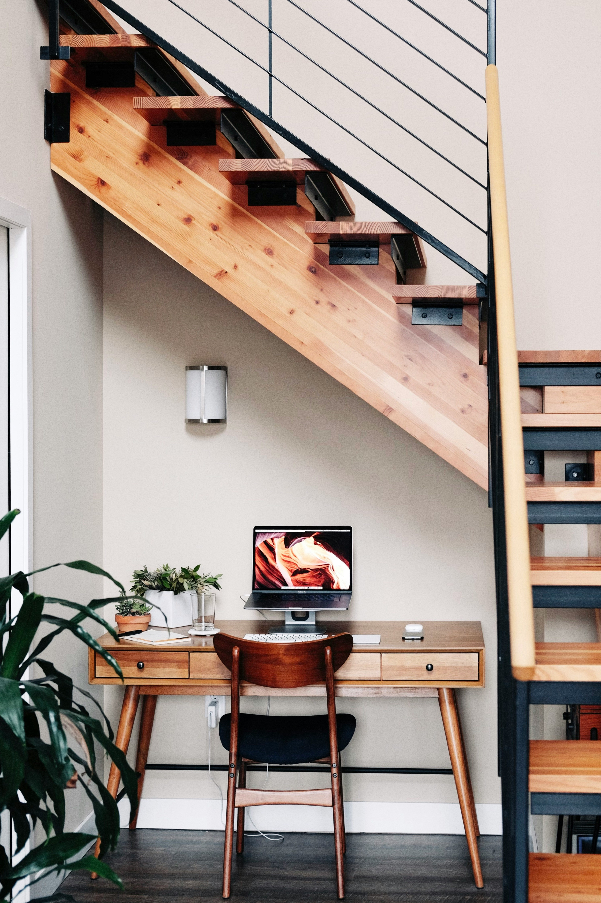

Steve Ndiritu
Location: Nyeri Town,Skuta
Years of Experience: 20+ Years
Featured Products
Kitchen Cabinets

Ksh.30000
Wadrobes

Ksh.10000
About the Artisan
Steve is acknowledged as one of the best Local artisans in not only Nyeri but also other counties. He deals with construction of building materials such as wadrobes,kitchen cabinets,Gypsum installation and other works that deal with interior designing of your home.He is fully dedicated to his work and has an end goal of ensuring that all his customers are fully satisfied.You can reach him through all his contact information below.
Phone number: 0723767031